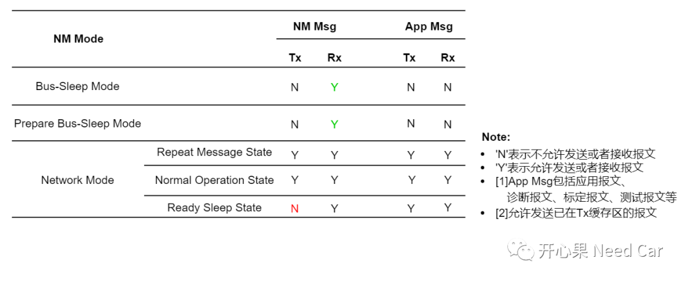
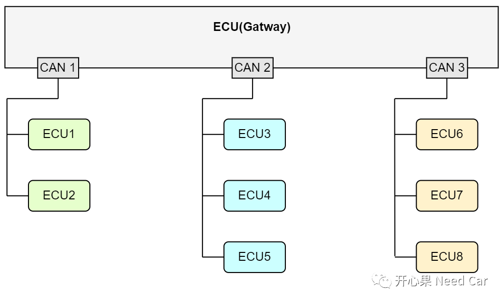
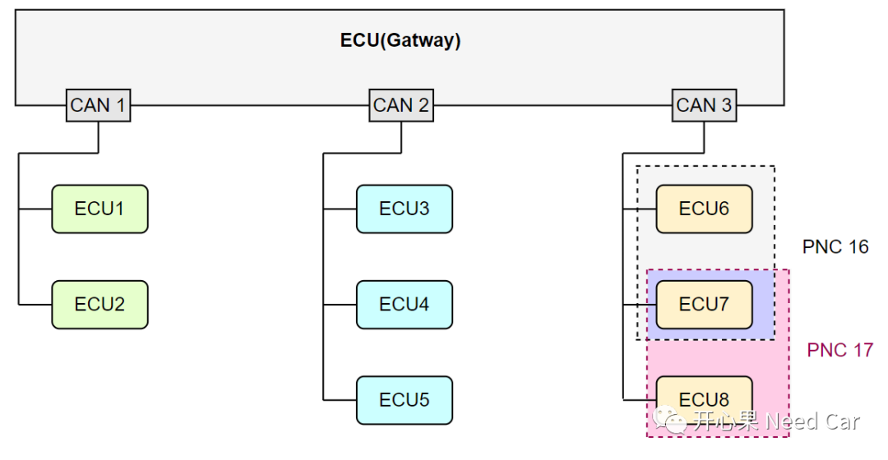
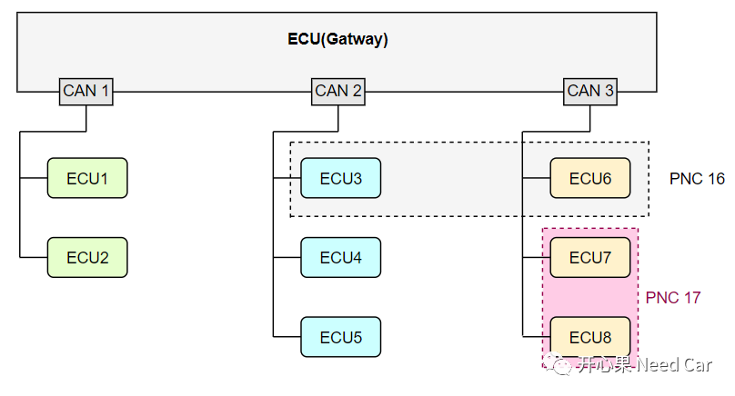
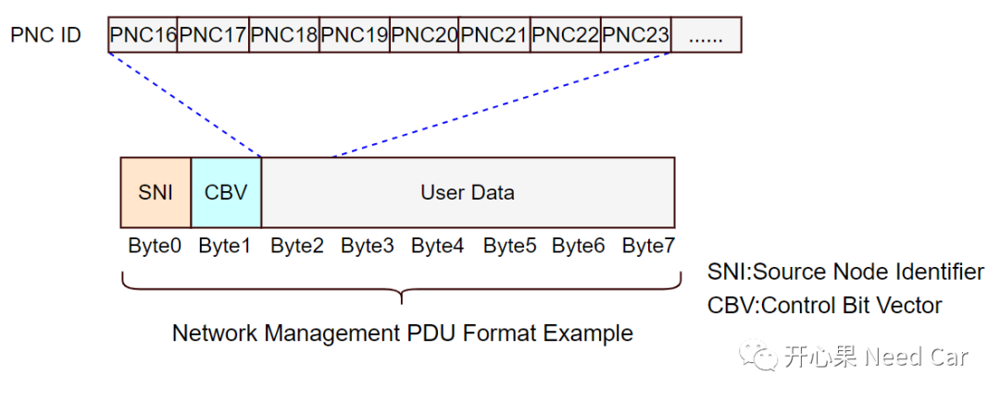
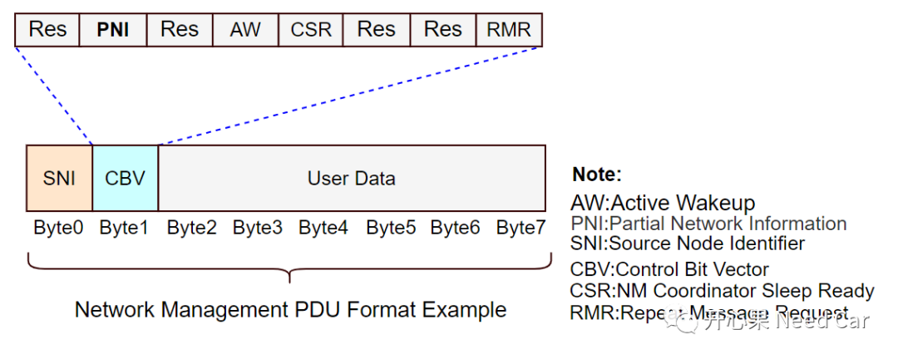

开心果 Need Car · 2022-09-16T17:48:00+08:00 · 微信原文
近几年，汽车智能化和网联化的发展，使得更多的控制器（ECU）被部署到E/E(Electronic/ Electrical)架构中。更多的ECU被部署到整车网络拓扑中，意味着：总线中的Message（报文）数量增加，网络系统的复杂度提高。虽然，单个节点（eg：CAN节点）的容错很高，但是，当多个节点放到整车环境中，工况复杂多变时，整车通信的稳定性是否还能像单节点那样，稳定可靠呢？没人敢保证。实际的工程开发中，我们也能体会到这一点：明明单件开发时，功能都很正常，但是，将单件集成到整车环境中，一测试，问题总是不停的报出来。为了提高整车网络的稳定性，网络管理必不可少，网络管理通过协调各个节点的网络状态，进而控制节点间的通信行为，增加车辆的安全与稳定。
提示：本文讨论CAN总线网络管理。
不管何种总线，它们的载体都是Message，也就是我们常说的"报文"。报文中携带着信号（Signal），通过Signal的接收、处理、发送，控制着车辆的各个功能，当然，也会因这些信号的收/发时机不对带来各种各样的问题。为了更好的约束这些信号的收/发时机，Autosar CanNM定义了网络管理状态：
Network Mode（Repeat Message State、Normal Operation State、Ready Sleep State）、Prepare Bus-Sleep Mode、Bus-Sleep Mode。不同的网络状态下，约束着各类报文报文的收/发行为，进而管理好整车网络。
1、常见NM工程需求
工程中，比较常见的一种CAN网络管理需求如下所示：

需求解读：
（一）Bus-Sleep Mode：不能发送NM Msg，可以接收NM Msg，App Msg既不能发送，也不能接收。这里解释一下App Msg，App Msg包括：诊断报文、标定报文、应用报文、测试报文等。这里的测试报文是一种预留报文，主要用于开发阶段，携带一些目标信息，便于Bug问题排查。
（二）Prepare Bus-Sleep Mode：不能发送NM Msg，可以接收NM Msg，App Msg既不能发送，也不能接收。
（三）Neteork Mode：
Repeat Message State：NM Msg和App Msg即可以收，也可以发送。
Normal Operation State：NM Msg和App Msg即可以接收，也可以发送。进一步细化，对于能进入NOS状态的节点来说，意味着该节点是主动网络节点，在该状态下，会周期性地发送网络管理报文。
Ready Sleep State：NM Msg可以接收，不能发送，App Msg即可以收，也可以发送。进入RSS状态，意味着节点网络的“Release”，所以释放网络的节点就停发NM Msg，表达自己不想通信的意愿。
通过如上的需求可以看出，整个网络管理依赖一个特征报文（NM Msg），这个特征报文可以控制着整个网段内各个节点的网络状态。网络状态的切换进而控制着各类报文的收/发行为。
所以，网络管理的实质是在管理各类报文的收/发时机。可是，网络管理的目的是“节能”，如何节能呢？节能的本质是降低对车辆蓄电池的耗电，工作的ECU越多，耗电量就越多，所以，减少非必要工作ECU的数量就可以降低电量消耗。我们进一步想：怎样让非必要的ECU不工作呢？通过停发NM Msg协调网段内的ECU节点进入BSM模式，进而再停发App报文，最终，让这些ECU休眠，以此达到节能的目的。
比如：某一时刻，CAN 1总线上的ECU1和ECU2没必要参与工作，可以让ECU1和ECU2释放网络（停发NM Msg），进而切换两者的网络状态，最终让ECU1和ECU2休眠。

2、局部网络管理(PN：Partical Network)
对于刚才所讨论的网络管理问题，有一个特点：一个网段内的节点要不一起醒，要不一起睡。如此这样，就不能满足一些工况的需求。我们假设几个场景：
场景一：对于新能源车，插枪充电时，一个网段内的部分节点（ECU）没必要工作，只要参与充电功能的节点工作即可。
场景二：ECU下电，同一个网段内的某些节点有延时下电要求（eg:5min），有些节点则不需要延时下电，如果延时下电的节点一直拉着非延时下电节点，不让其休眠，势必增加蓄电池的耗电，怎么办呢？
场景三：车辆无钥匙进入功能，车主携带钥匙靠近车辆时，车门自动开锁并解除防盗警戒状态，同时车灯闪烁，这些功能是不需要所有ECU参与工作的。
上述的场景很多，不一一列举。对于这样的工况，局部网络管理（PN）应运而生。PN的目的：在全局网络管理的基础上进一步节能。
与全局网络管理不同，局部网络管理根据组件功能划分不同的网络簇（PNC：Partial Network Cluster），每一个PNC就是一个虚拟的局部网络。PNC可以在同一个网段，也可以跨不同的网段。
（一）PNC在同一个网段，如下所示：

（二）PNC在不同的网段，如下所示：



往期精彩回顾